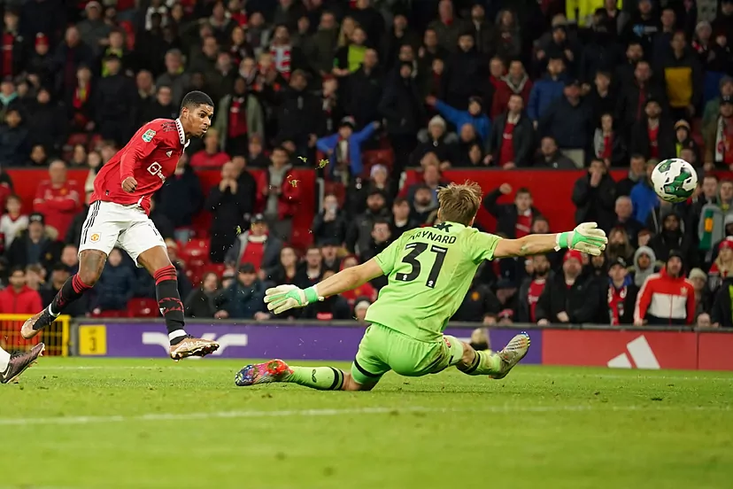

Ha marcado en los seis partidos que ha jugado y suma más goles (7) que nadieHa marcado en los seis partidos que ha jugado y suma más goles (7) que nadie.
En el horizonte asoma otro gran duelo en forma de pistoleros: Marcus Rashford vs. Erlind Haaland. El canterano del United ha llenado el vacío dejado por Cristiano Ronaldo y se ha 'comido' al '9' del City tras el reinicio del 'football'. Nadie ha marcado más goles (7) desde que terminó el Mundial. Rashford 'golea' a sus más inmediatos perseguidores. Por detrás asoman, con cuatro dianas, el propio Haaland, Kane, Mahrez, Nketiah, Benzema, Munir El Haddadi, Benzema...
El Barça, con tres partidos menos de local, es el único equipo de las grandes ligas que mejora la solidez defensiva del Granada.
Para cualquier rival, visitar Los Cármenes se está convirtiendo en un auténtico calvario, como comprobó en primera persona el Cartagena, que se marchó del estadio nazarí de vacío. Una jornada más, el conjunto rojiblanco consiguió mantener su portería a cero y sumar un nuevo triunfo como local, papel en el que no conoce la derrota.